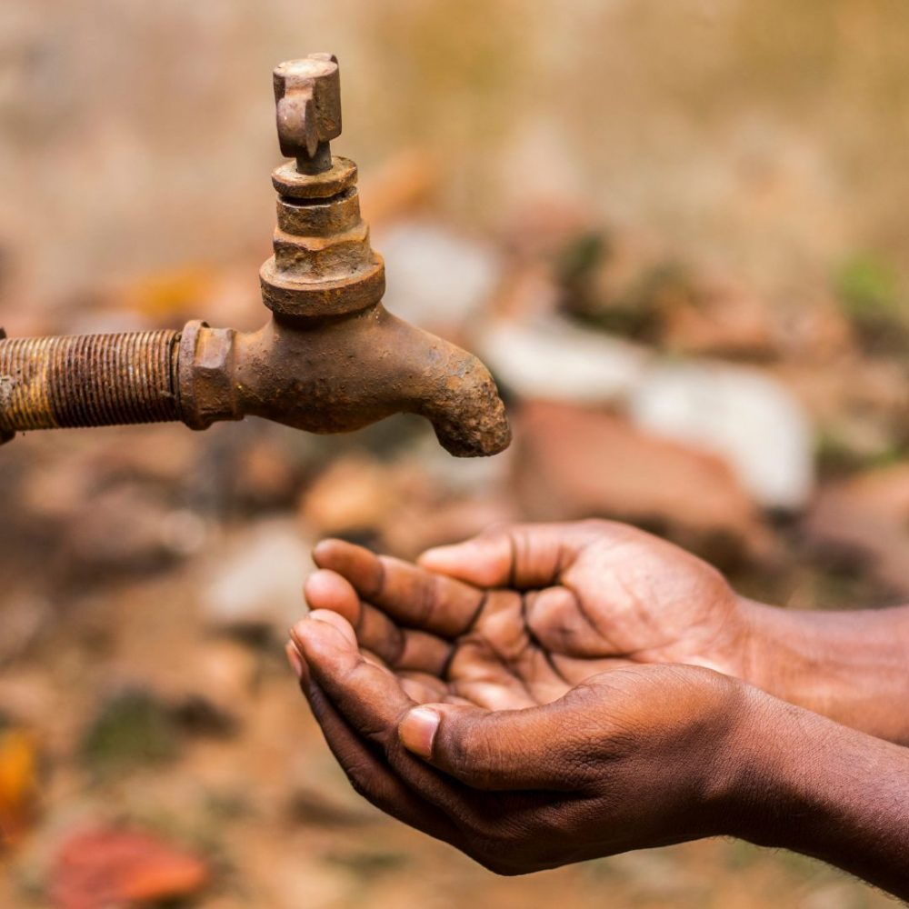

За останні десятиліття запаси прісної води на душу населення скоротилися на 20%, доступність води швидко зменшується через постійне нераціональне використання води. Проблема надмірного споживання води є дуже важливою темою, яка вимагає нашої уваги. Важливо пам'ятати, що кожен із нас може зробити свій внесок у зменшення водного сліду, аби сприяти вирішенню глобальної проблеми.
Раціональне використання води є важливим для забезпечення сталого розвитку суспільства. Зокрема багато води використовують в сфері сільського господарства, для розведення худоби, зрошення полів та інших потреб. До того ж вода використовується у промисловості для виробництва товарів, вироблення електроенергії, охолодження і нагрівання обладнання, рідин і газів. Вода також використовується у побуті для пиття, гігієни, готування їжі, прання, садівництва та для інших цілей. Наслідком недостатнього споживання води людиною може бути розвиток різних захворювань та навіть смерть.